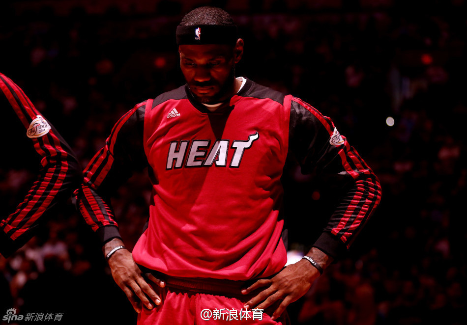

当今足球比赛使用的球和几十年前是不一样的吧？用现在的球踢出球速快、曲线诡异的球要容易很多吧？

斯图亚特9
2014-07-11
斯图亚特9
2014-07-11
去年总决赛热火幸运得到冠军，但詹姆斯的表现真的配不上超级巨星。今年总决赛热火完败，詹姆斯倒是表现出了巨星的风采。
@新浪体育:
#詹姆斯决定回骑士#四年四进总决赛，两连冠，或许就在这一刻成为了历史，尘封起来。韦德、波什和詹姆斯，四年前聚首成为爆炸性时刻。这期间他们和他们的球迷都迷离过，但也狂笑过。在迈阿密诱人的海滩旁，这样一段让人迷醉的过往，谁都会忘不了。点击观看詹姆斯热火时期高清图： 网页链接
网页链接
- 